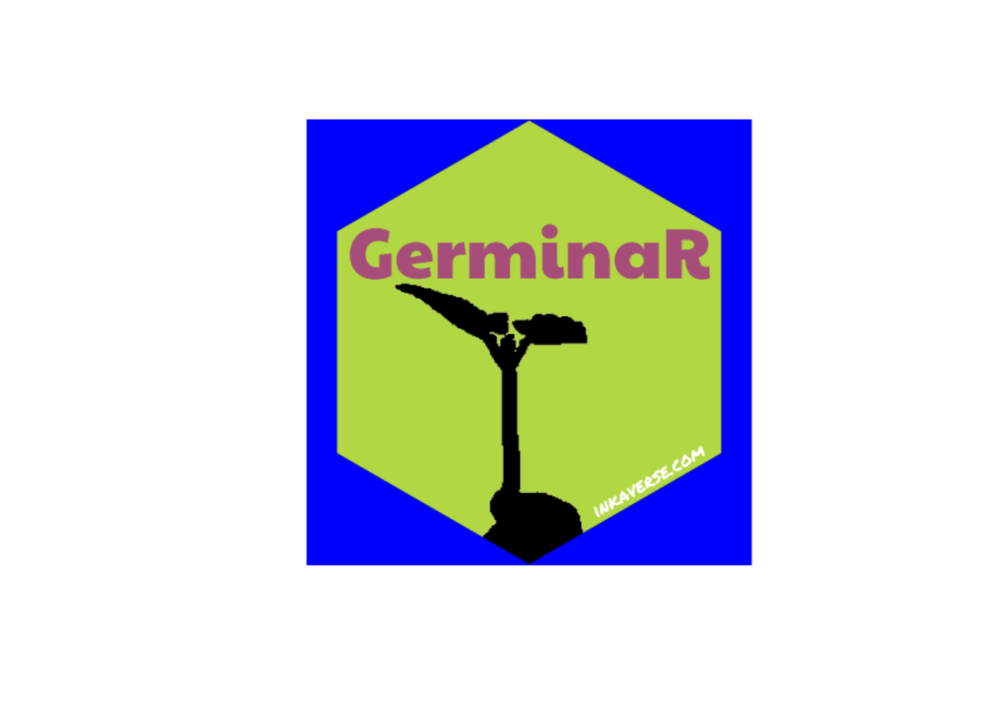
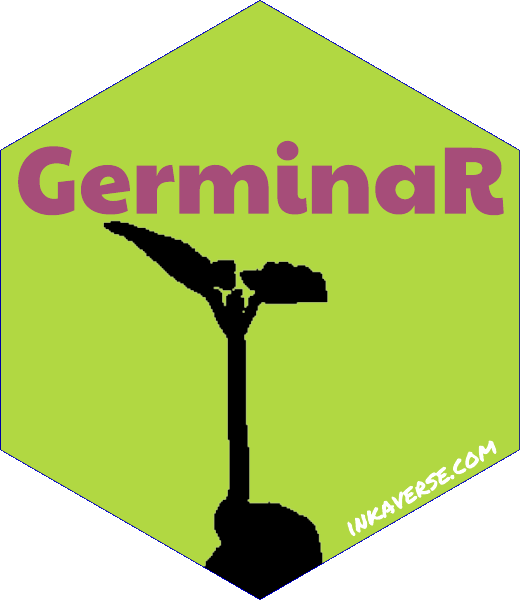

library(huito)
font <- c("Paytone One", "Permanent Marker")
huito_fonts(font)More information from GerminaR project: https://germinar.inkaverse.com/
Sticker design
In the layer include_image(opts = "magick package") you can add different arguments and combine them using asterisk (*) or list("magick function").
Options available in magick package
Select different panel color for your sticker (i.e.
include_shape(panel_color = "color")).
Package setup
Sticker design
label <- label_layout(size = c(5.08, 5.08)
, border_width = 0
, background = "#b1d842"
) %>%
include_image(value = "https://germinar.inkaverse.com/img/seed_germination.png"
, size = c(5.5, 5.5)
, position = c(2.55, 1.26)
, opts = list('image_transparent("white")'
, 'image_modulate(brightness = 0)')
) %>%
include_shape(size = 5.08
, border_width = 0
, position = c(2.54, 2.54)
, panel_color = "blue"
) %>%
include_text(value = "GerminaR"
, font = font[1]
, size = 23
, position = c(2.54, 3.55)
, color = "#a64d79"
) %>%
include_text(value = "inkaverse.com"
, font = font[2]
, size = 6
, position = c(3.9, 0.96)
, angle = 30
, color = "white"
)Preview mode
label %>%
label_print(mode = "preview")
Complete mode
The final file is exported in pdf format.
sticker <- label %>%
label_print(filename = "GerminaR"
, margin = 0
, paper = c(5.5, 5.5)
, mode = "complete"
)Transparent logo
Import the image in pdf format and cut the border and make the panel_color transparent.
sticker %>%
image_read_pdf() %>%
image_crop(geometry = "600x600+40") %>%
image_crop(geometry = "560x600-40") %>%
image_transparent('blue') %>%
image_write("GerminaR.png")Final sticker result
include_graphics("GerminaR.png")